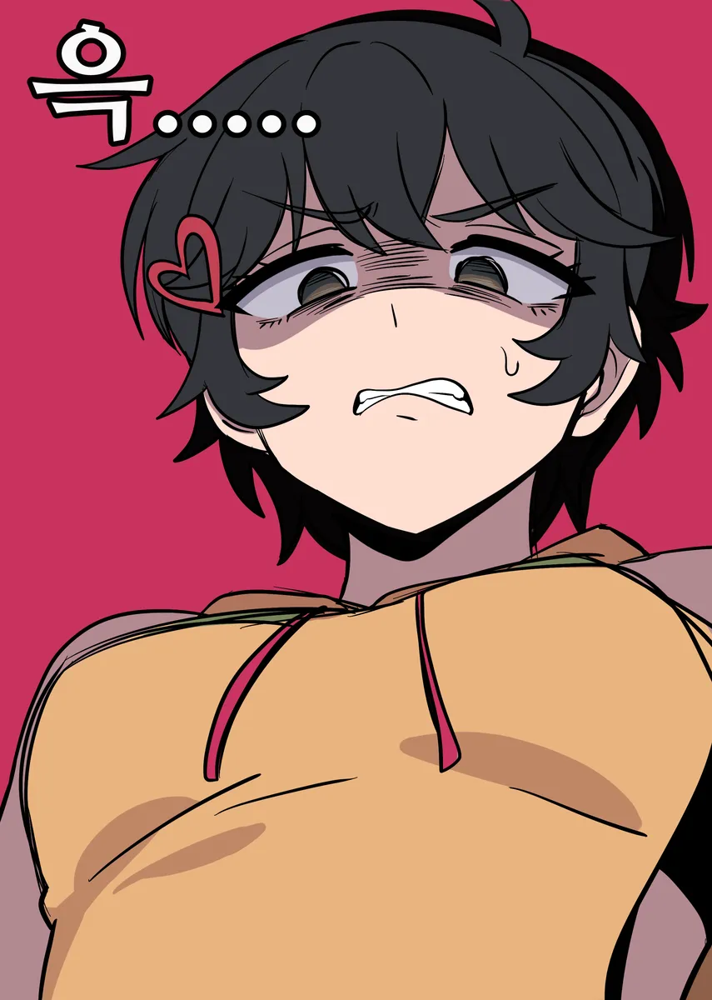
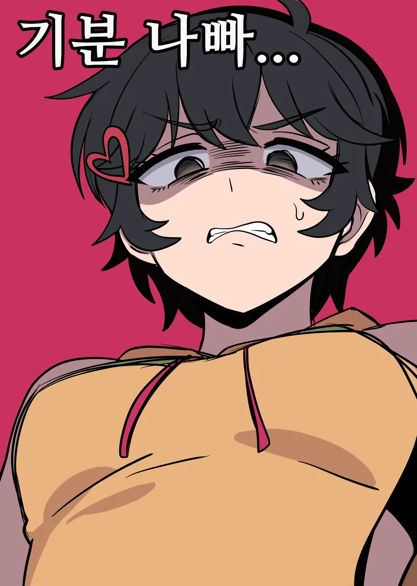
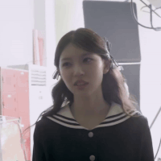

하니는 빈유가 상식이거늘
하니찌찌 만지고싶다
어허 미자
육상으로 단련된 하체, 땀내에 절여진 발
발을 들어올려서 앉아 있는 상대방의 눈높이에 맞추고 살포시
여벌 운동화가 새로 생겼다
하니가 애새끼에서 톰보이눈나가되어버렸서 넘무조아

Cex

얘네 중학생이지?
나애리랑 결혼하고싶다
오
후욱후욱

라고하면서 발로 밟아주는거지

이번 나애리 만화만 성공했으면 ㅜㅜ 트립닷컴밖에 생각안나 ㄷㄷ


근데 쟤네 포티아니냐?

나쁜 계집애
경멸하는 개붕이는 필요없어요…